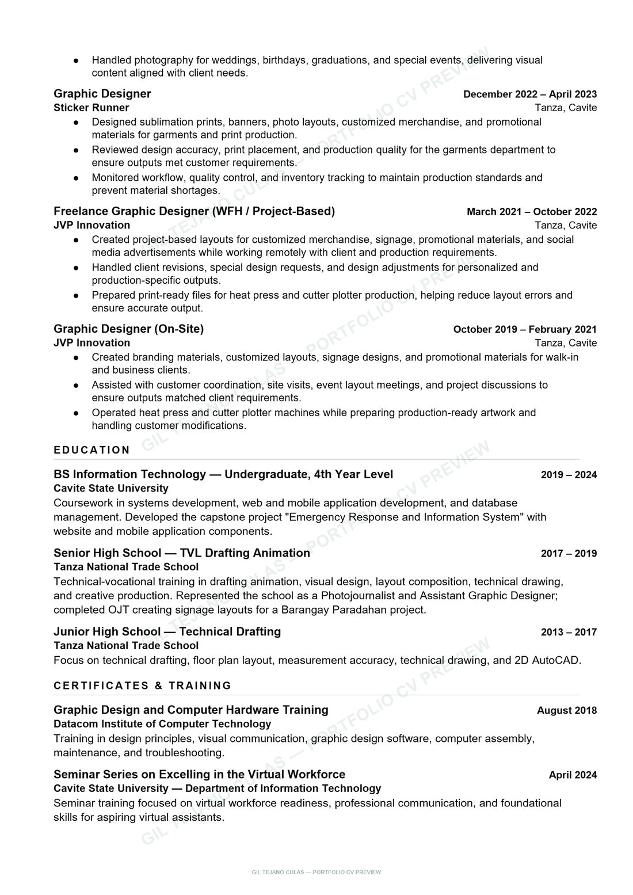

Curriculum Vitae
Gil Tejano Culas
Senior Graphic Designer / Creative Specialist — portfolio preview of the current CV.
This preview shows the official English version of the CV.
CV summary
Gil Tejano Culas — Senior Graphic Designer / Creative Specialist based in Cavite, Philippines. Contact through this website or giltejano.visuals@gmail.com.
7+ years creating brand-focused visuals for retail, furniture, lighting, manufacturing, events, and print production: campaign visuals, social media content, catalogs, showroom materials, sales presentations, and production-ready layouts.
Experience
- Senior Graphic Designer / Creative Specialist, Metal-Lite Illuminazione Marketing, Quezon City — July 2025 to present.
- Senior Graphic Designer, GJF Design and Printing Manufacturing Corporation, Dasmariñas City — July 2024 to July 2025.
- Graphic Designer, JAMS Advertising, Peñablanca — April 2023 to September 2023.
- Graphic Designer, Sticker Runner, Tanza — December 2022 to April 2023.
- Freelance Graphic Designer (work from home, project-based), JVP Innovation — March 2021 to October 2022.
- Graphic Designer (on-site), JVP Innovation — October 2019 to February 2021.
Skills
Brand campaign visuals, social media design, print and digital layout, catalog and brochure design, retail and showroom materials, sales presentations, production-ready artwork, photo manipulation, photo and video content capture. Software: Adobe Photoshop, Illustrator, Lightroom, Affinity, SketchUp, Canva, CapCut, DaVinci Resolve, Visual Studio Code, InDesign, Premiere Pro, After Effects, Figma.
Education and training
BS Information Technology (undergraduate, 4th year level), Cavite State University, 2019–2024. Senior High School, TVL Drafting Animation, Tanza National Trade School, 2017–2019. Junior High School, Technical Drafting, Tanza National Trade School, 2013–2017. Graphic Design and Computer Hardware Training, Datacom Institute of Computer Technology, August 2018. Seminar Series on Excelling in the Virtual Workforce, Cavite State University, April 2024.


Need a formal copy?
Verified employers and clients may request a current PDF version directly.
Request CV Copy